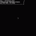

A coordinated supply chain attack on Packagist compromised eight PHP/Composer packages by injecting malicious postinstall scripts into package.json, which download and execute a Linux binary from a GitHub Releases URL. The campaign is notable for its cross-ecosystem placement, targeting JavaScript build tooling alongside PHP code.
一场针对 Packagist 的协同供应链攻击通过向 package.json 注入恶意 postinstall 脚本，感染了八个 PHP/Composer 包，这些脚本从 GitHub Releases URL 下载并执行 Linux 二进制文件。该攻击因其跨生态系统的放置方式而引人注目，同时针对 PHP 代码和 JavaScript 构建工具。
Key Points
- Eight Composer packages on Packagist were compromised in a coordinated supply chain attack.
- Malicious code was inserted into package.json (not composer.json) as a postinstall script, targeting projects with JavaScript build tooling alongside PHP.
- The script downloads a Linux binary from a GitHub Releases URL, saves it to /tmp/.sshd, sets executable permissions, and runs it in the background.
- The same payload was found in 777 GitHub files, including at least two GitHub workflow files, indicating a broader campaign.
- The GitHub account hosting the binary payload is no longer available, so the second-stage payload's nature is unknown.
- The malware binary is named "gvfsd-network", mimicking a GNOME Virtual File System daemon.
Context & Contrast
Previous supply chain attacks on Packagist typically injected malicious code into composer.json or PHP source files. This attack's use of package.json for cross-ecosystem placement is novel, as it targets JavaScript build tooling that may be present in PHP projects. Additionally, leveraging GitHub Releases as a malware distribution platform is a relatively new tactic, contrasting with attacks that host payloads on compromised domains or paste sites.
Why It Matters
This attack highlights a blind spot in software supply-chain security: dependency scanners that only check language-specific metadata (e.g., composer.json) can miss malicious code embedded in cross-ecosystem files like package.json. The use of a trusted platform (GitHub Releases) for malware distribution complicates detection and takedown. The scale (777 files) suggests this technique may be widely adopted by attackers, making it a significant threat to the PHP and JavaScript ecosystems.
Critical Take
The analysis is based on a single security vendor's (Socket) report. The second-stage payload is unavailable for analysis, so the true capability and intent of the malware remain unknown. The claim of 777 files containing the same payload may include duplicates, forks, or cached references, inflating the perceived scale. The attack's success rate and actual impact on end users are not disclosed.
What to Watch
- Monitor for similar cross-ecosystem attacks targeting other language registries (e.g., npm, PyPI) using package.json or equivalent metadata files.
- Track the takedown of the GitHub Releases repository and any subsequent re-uploads of the binary under different names.
- Observe if security scanners (e.g., Composer audit, Snyk, Socket) update their detection rules to cover package.json in PHP packages.
- Watch for disclosure of the second-stage payload if researchers recover it from other sources.
要点
- Packagist 上的八个 Composer 包在一次协同供应链攻击中被攻陷。
- 恶意代码被插入 package.json（而非 composer.json）作为 postinstall 脚本，针对同时使用 PHP 和 JavaScript 构建工具的项目。
- 该脚本从 GitHub Releases URL 下载 Linux 二进制文件，保存到 /tmp/.sshd，设置可执行权限，并在后台运行。
- 相同的 payload 在 777 个 GitHub 文件中被发现，包括至少两个 GitHub workflow 文件，表明这是一场更广泛的攻击活动。
- 托管二进制 payload 的 GitHub 账户已不可用，因此第二阶段 payload 的性质未知。
- 恶意二进制文件名为 "gvfsd-network"，模仿 GNOME 虚拟文件系统守护进程。
背景与对比
此前针对 Packagist 的供应链攻击通常将恶意代码注入 composer.json 或 PHP 源文件。本次攻击利用 package.json 进行跨生态系统放置是新颖的，因为它针对的是 PHP 项目中可能存在的 JavaScript 构建工具。此外，利用 GitHub Releases 作为恶意软件分发平台是一种相对较新的策略，与将 payload 托管在被攻陷域名或粘贴网站上的攻击形成对比。
重要性
此次攻击凸显了软件供应链安全中的一个盲点：仅检查特定语言元数据（如 composer.json）的依赖扫描器可能会遗漏嵌入在跨生态系统文件（如 package.json）中的恶意代码。利用可信平台（GitHub Releases）分发恶意软件使检测和清除更加复杂。其规模（777 个文件）表明该技术可能被攻击者广泛采用，对 PHP 和 JavaScript 生态系统构成重大威胁。
批判性视角
该分析基于单一安全供应商（Socket）的报告。第二阶段 payload 无法获取分析，因此恶意软件的真实能力和意图仍未知。声称 777 个文件包含相同 payload 可能包含重复项、分支或缓存引用，夸大了感知规模。攻击的成功率和实际对最终用户的影响尚未披露。
后续关注
- 关注针对其他语言注册表（如 npm、PyPI）的类似跨生态系统攻击，利用 package.json 或等效元数据文件。
- 跟踪 GitHub Releases 仓库的清除情况，以及该二进制文件是否以不同名称重新上传。
- 观察安全扫描器（如 Composer audit、Snyk、Socket）是否更新检测规则以覆盖 PHP 包中的 package.json。
- 关注研究人员是否从其他来源恢复第二阶段 payload 并披露其细节。

